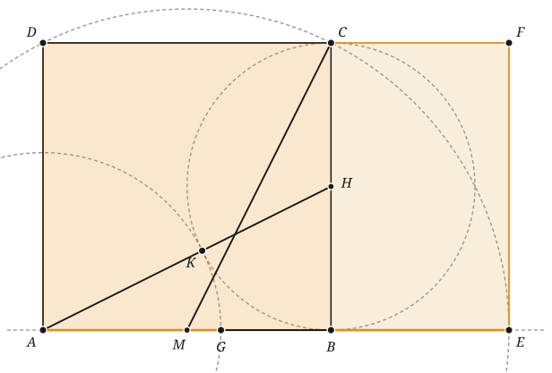

IV. Living Geometry & Morphogenesis¶
Botanical Spiral Packing, Gnomonic Growth, Cellular Equilibrium & Wythoff Proportion
Nature makes visible what symbolic algebra proves: when growing primordia emerge sequentially from an apical meristem, when soap films and bee cells minimize surface energy, and when chambered shells expand by self-similar gnomons, the Golden Ratio, Platonic angles, and logarithmic spirals govern living form.
phyllotaxis — Botanical Morphogenesis & Interactive Studios¶
Live Book Codex & Studios: geometor.github.io/phyllotaxis
2D Apical Meristem Studio: meristem_2d.html
3D Recursive Propagation Studio: propagation_3d.html
Repository: github.com/geometor/phyllotaxis

Inspired by the mathematical botany of Roger V. Jean, Wilhelm Hofmeister, the Bravais brothers, Alan Turing, and H. Vogel, geometor.phyllotaxis models spiral plant morphogenesis symbolically and interactively:
The Golden Divergence Angle: Because \(\phi = [1; 1, 1, 1, \dots]\) is the most irrational noble number (slowest rational approximation by continued fractions), consecutive primordia diverging by
\[\Phi = 2\pi\left(1 - \frac{1}{\phi}\right) = \frac{2\pi}{\phi^2} \approx 137.507764^\circ\]achieve optimal uniform packing across all scales of growth.
Opposing Fibonacci & Lucas Parastichies: Nearest-neighbor vascular and visual contact spirals naturally organize into consecutive Fibonacci pairs \((5, 8)\), \((8, 13)\), \((13, 21)\), \((21, 34)\), \((34, 55)\)—and, under alternative divergence basins, Lucas and anomalous sequences.
Live 2D Canvas & 3D Three.js WebGL Laboratories: Tune divergence angle, plastochron radial growth, axial elongation, and recursive vascular branching in real time directly in the browser—watching parastichy families lock in and dissolve as \(\Phi\) sweeps past rational resonances into \(2\pi/\phi^2\).
thompson — Sir D’Arcy Wentworth Thompson’s On Growth and Form (1917)¶
Live Book Codex: geometor.github.io/thompson
Repository: github.com/geometor/thompson
3-Track Book Codex (1917 Cambridge First Edition, Summary, Notes) + exact SymPy / geometor.model biological morphogenesis engine reconstructing D’Arcy Thompson’s mathematical morphology:
Plateau Cellular Equilibrium: Exact symbolic derivation of the \(120^\circ\) three-film planar junction (via the Euclidean vesica piscis) and the \(\arccos(-1/3) \approx 109^\circ 28' 16''\) tetrahedral four-edge soap-film vertex.
Maraldi’s Honeycomb Rhombic Apex: Exact surface-area calculus proving that closing a hexagonal prism with three rhombic faces of obtuse angle \(\arccos(-1/3)\) (dihedral \(120^\circ\), matching Kepler’s rhombic dodecahedron!) minimizes wax surface for fixed cell volume.
Gnomonic Equiangular Spirals & Theory of Transformations: Exact Whirling Golden Rectangle gnomons (Nautilus / foraminifera shells) and algebraic Cartesian deformation grids (Argyropelecus to Sternoptyx, Diodon to Orthagoriscus).
knott — Catalog of Ron Knott’s Fibonacci Numbers, the Golden Section & Wythoff Geometry¶
Live Mathematical Catalog: geometor.github.io/knott
Repository: github.com/geometor/knott

Structured one-item-per-page GEOMETOR Mathematical Catalog documenting the number-theoretic, geometric, and combinatorial discoveries popularized in Dr. Ron Knott’s Fibonacci Numbers and the Golden Section through original SymPy solvers and geometor.model constructions:
Fibonacci & Lucas Number Theory: Exact Binet \(\mathbb{Z}[\phi]\) arithmetic, Cassini/Catalan/d’Ocagne identities, GCD divisibility (\(\gcd(F_m, F_n) = F_{\gcd(m, n)}\)), modular Pisano periods \(\pi(m)\), and Zeckendorf / Fibonacci-base representations.
Pythagorean Triples & Golden Dissections: Fibonacci-generated Pythagorean triples \((F_n F_{n+3},\; 2 F_{n+1} F_{n+2},\; F_{n+1}^2 + F_{n+2}^2)\), Golden Triangle & Golden Gnomon Robinson-style dissections, and regular pentagon chord lattices.
Continued Fractions & Wythoff’s Game: Convergents of \([1; 1, 1, \dots]\) and Beatty’s complementary spectrum theorem partitioning \(\mathbb{Z}_{>0}\) into \((\lfloor n\phi \rfloor, \lfloor n\phi^2 \rfloor)\) cold positions of Wythoff’s Nim.
hambidge — Jay Hambidge’s The Elements of Dynamic Symmetry (1920)¶
Live Book Codex: geometor.github.io/hambidge (The Elements of Dynamic Symmetry)
Repository: github.com/geometor/hambidge

3-Track Book Codex (174 tracked primary-source folios from Hambidge’s 1919–1920 The Diagonal & Elements) reconstructing Dynamic Symmetry in exact SymPy quadrance algebra: commensurable-in-power root rectangles (\(\sqrt{2}, \sqrt{3}, \sqrt{4}, \sqrt{5}\)), the Whirling Square Rectangle (\(\phi\)), and the \(\sqrt{\phi}\) and \(\frac{\sqrt{5}+1}{4}\) design canons of Greek vases and botanical phyllotaxis.
huntley, livio & posamentier — Modern Golden Ratio Mathematical Catalogs¶
H. E. Huntley (*The Divine Proportion*): geometor.github.io/huntley (Catalog · GitHub)
Mario Livio (*The Golden Ratio & Myth Triage*): geometor.github.io/livio (Catalog · GitHub)
Posamentier & Lehmann (*The Glorious Golden Ratio*): geometor.github.io/posamentier (Catalog · GitHub)
Three complementary one-item-per-page GEOMETOR Mathematical Catalogs modeling every mathematical construction, Fibonacci matrix identity, spira mirabilis gnomon, circle-chord golden ratio theorem, Penrose tiling inflation, and historical primary-source claim triage over exact \(\mathbb{Q}(\phi)\).